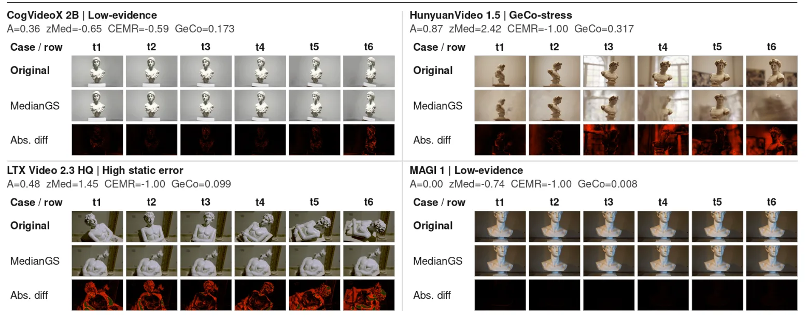
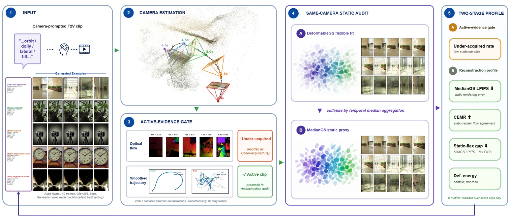

GeoT2V-Bench：用三维重建评测文本到视频模型的 3D 一致性GeoT2V-Bench: Benchmarking 3D Consistency in Text-to-Video Models via 3D Reconstruction
不是 SLAM 方法，但评测思想与三维重建、相机轨迹估计和 Gaussian representation 密切相关；适合用于筛查生成式合成数据的几何可靠性。
一句话工作总结
把生成视频当成多视角采集序列，用几何估计与 3DGS 重建 profile 诊断其是否具备真实静态三维一致性。
摘要
Camera-prompted 文本到视频模型可生成环绕物体或穿越静态场景的视频，但视觉上合理不代表帧间真的对应同一个刚性三维场景。GeoT2V-Bench 提出基于重建的诊断 benchmark：先估计每帧相机内参与位姿，拟合 DeformableGS，再通过时间中位数聚合得到静态 MedianGS 代理，并沿估计相机路径重渲染。它不输出单一通过/失败标签，而是报告图像运动、轨迹行为、静态渲染误差、flow agreement、flexible-vs-static gap 等连续 profile。作者在 12 个开源模型配置、80 个静态场景 prompt 上完成 3840 次重建。
Camera-prompted text-to-video (T2V) models are increasingly used to synthesize virtual camera captures, such as orbiting objects or moving through static scenes. For these outputs, visual plausibility is insufficient: the generated frames should also provide coherent multi-view evidence for a single static 3D scene. We introduce GeoT2V-Bench, a reconstruction-based diagnostic benchmark for evaluating whether camera-prompted T2V clips can support explicit rigid 3D reconstruction. Our pipeline estimates per-frame camera intrinsics and poses with VGGT-style geometry estimation, fits DeformableGS, derives a static MedianGS proxy by temporal-median aggregation, and renders this proxy along the estimated camera path. Instead of producing a pass/fail label or a single scalar score, GeoT2V-Bench reports a continuous reconstruction profile covering apparent image motion, estimated trajectory behavior, MedianGS static rendering error, static-render flow agreement, and the gap between flexible and static fits. On a fair-format four-seed evaluation with 3,840 completed reconstructions from 12 open-weight model configurations and 80 GeCo-Eval static-scene prompts, we find that visible motion, static rendering error, flow agreement, and flexible-vs-static behavior often disagree. GeoT2V-Bench therefore captures complementary failure modes that emerge when generated videos are tested as global static-scene acquisitions.
中文解读摘录
- 英文题名：Pocket-SLAM: Rendering-Area-Aware Pruning for Memory-Efficient 3DGS-SLAM
- 作者：Leshu Li, Jie Peng, Yang Zhao
- 类别/来源：cs.CV；comment: 2026 IEEE International Conference on Robotics and Automation (ICRA)；采集 score=17；阅读优先级=9.3/10。
- 一句话总结：用“对有效渲染区域的贡献”而不是单点 opacity/gradient 启发式来剪枝高斯，在保持定位/建图精度的同时显著降低 3DGS-SLAM 运行内存。
- 为什么值得看：这是今天最贴近 SLAM 主线的工作，直接面向大尺度/自动驾驶场景中 3DGS-SLAM 高斯点持续累积的问题；摘要报告 EuRoC/KITTI 上超过 60% 内存降低和 2 倍以上 FPS 提升，且给出了开源仓库地址。后续应复核其 pruning 触发策略、实时开销、对回环/长期地图维护的影响，以及和现有 keyframe/visibility 管理的关系。
- 标签：3DGS-SLAM、内存剪枝、实时建图、自动驾驶
- 链接：abs / PDF
图表/页面预览
{kind=link}

{kind=link}
